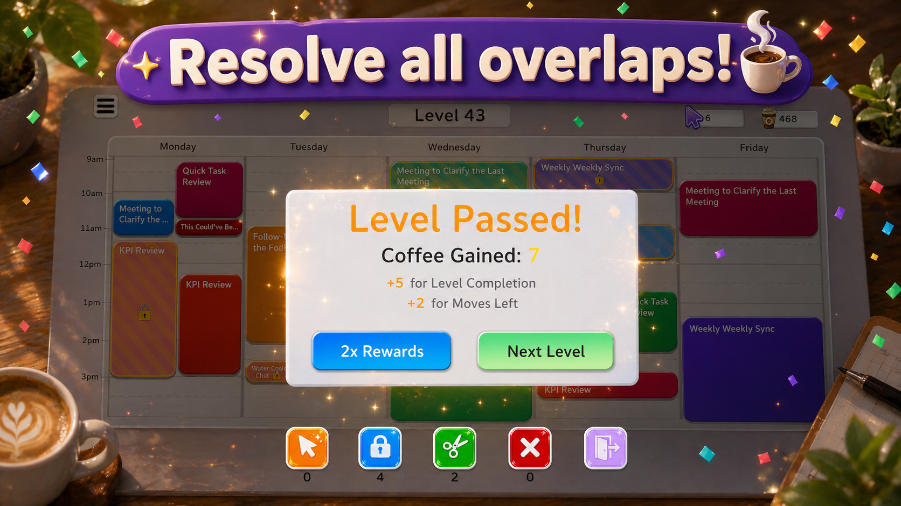

Start with the rules, then choose a destination
In Meeting Mayhem, you can drag unlocked meetings to different times or days. Their duration stays fixed, and locked meetings cannot be moved by dragging. The calendar has a limited number of days and hours. A solution fits all the meetings inside that space without overlaps.
If the controls are still unfamiliar, start with the gameplay guide. The approach below is about planning ordinary meeting moves.

Measure gaps by continuous time
For each meeting involved in a conflict, compare its full duration with the available gaps. Count the space from a gap’s start to its next occupied boundary, rather than counting all empty time on the day.
For example, two separate 30-minute gaps cannot hold one uninterrupted 60-minute meeting. That is a general consequence of keeping the meeting’s duration fixed, not a walkthrough of a particular level. The same check applies near the bottom of the calendar: the start may fit while the meeting’s end extends outside the board.
Give scarce destinations priority
A longer meeting often has fewer destinations than a shorter one. Before moving a small block into a large gap, check whether that gap is the only place a longer meeting can fit.
“Longest first” is not a rule to follow blindly. Sometimes the large gap is not empty yet. A short meeting may be occupying part of it, so that short block needs to move first. Plan the destination for the long meeting, then work out which movable block is preventing you from using it.
Use locked events as boundaries
A locked meeting divides the available time into gaps on either side. You cannot make a continuous destination by dragging the locked event away. Check whether each movable meeting fits entirely before or after that boundary.
If neither gap works, inspect the other days. A boundary on one day does not prevent an unlocked meeting from moving to another day shown on the calendar.
Check whether the day is overloaded
When a day looks impossible, add up the durations of its meetings, including locked ones. If their total is greater than that day’s displayed capacity, rearranging them within that day cannot remove every overlap. At least one movable meeting must use another day.
The reverse is not a guarantee. Even when the total duration fits, locked events may split free time into gaps that are too small for the remaining blocks. Total capacity is a quick check; the actual shape of the gaps still matters.
A meeting without a conflict may still need to move
It is tempting to leave every non-overlapping meeting untouched. But an unlocked meeting sitting neatly in place may occupy the only destination for another block. Its current placement is valid without necessarily being part of the final solution.
Look for an alternative gap for that meeting before moving it. A useful sequence has two clear destinations: the first move opens space, and the next uses that space to resolve a conflict.
Evaluate the result of each move
Meeting Mayhem can accept a drop that still overlaps another meeting. Watch the resulting layout and ask whether the move removed a conflict, created a needed continuous gap, or freed a scarce destination. If it did none of these, reconsider it before spending further moves.
When Undo is available, it can restore the most recent move. Do not rely on it to recover a whole sequence. On levels with a move counter, inspect the remaining budget before starting a longer rearrangement.
When you get stuck
- Check every day for unused space, not only the day containing the conflict.
- Recheck meeting lengths against continuous gaps.
- Look for an unlocked, non-overlapping meeting occupying a needed destination.
- Check whether you have treated a locked boundary as if it could move.
- If you retry, change the move that caused the bottleneck instead of repeating the same arrangement.
These checks help you narrow down a board; they do not prescribe the same winning sequence for every level. You can practise them in Meeting Mayhem on Android.